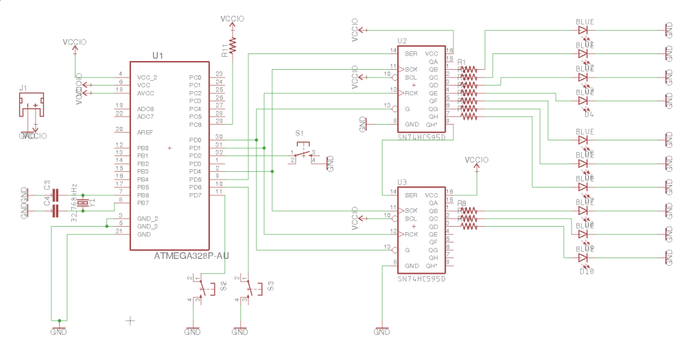
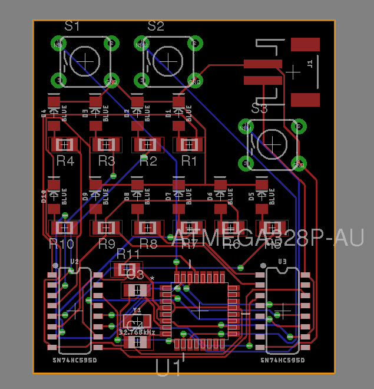

[4.2.18]
Final Code, Schematic, and PCB | Binary Watch
Last we saw, I got the binary watch code working with the 32.768kHz clock and fuse bytes (aside from the buttons!
The final code is out, I made the decision to keep the buttons simple and have them work only when the ATmega is awake. It’s much easier to let it happen that way than to use interrupts when the microcontroller is sleeping/waking up every second.
You can see my final code here:
https://github.com/thallia/BinaryWatch/blob/master/src/bwatch-clk.cpp
The display button is checked every time the ATmega wakes up, and if it’s pressed, it’ll display the time as long as the display button is held down.
Figuring out a way to stop the sleeping for 10 seconds would take a lot of workarounds and a lot of errors that I don’t have time to figure out right now, and I’m actually kind of liking the blinking display, too. Makes it feel more like a clock 🙂
As for the schematic, the final one looks like this!
I moved some of the GPIO pins around for the buttons, added VCC and GND to everything, and added a JST connector. I decided it would be best to power this thing through a bigger power supply with easier access, so I bought a LiPo and added the JST connector to the schematic.
Routing the PCB was super easy with eagleCAD:
And that’s the final board design! It’s super compact, so it should be able to fit on my wrist. The final dimensions were 37.0 mm x 43.4 mm. (I have a tiny wrist.)
I ordered the PCB through OshPark, I super highly recommend their services. They accept EagleCAD board files directly, so you don’t have to generate a bunch of gerber files, and keep you up to date on where your PCB is at at all times. I’ve gotten emails that my PCB has been through paneling and fabrication so far, and they should receive it back by mid-April.
The prices for the PCBs weren’t bad either. For 3 copies of mine it turned out to be a decent $12.75.
The parts (LEDs, caps, SMD parts, etc) should be here in a couple days…and I can’t wait.
Since I added a LiPo battery to the design, I now need to make a 3D printed case for the watch to hold it all. I’ll be using Fusion360 for that, so stay tuned!
{thallia}